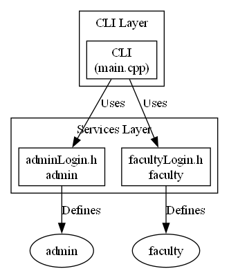

This documentation provides an overview of the software architecture. It focuses on the interaction between different modules, classes, and functions within the system, emphasizing the logical structure and relationships between various layers, including packages, services, and the command-line interface (CLI).
Architectural Overview
The system is structured in a layered architecture to promote modularity, maintainability, and testability. The primary layers include:
- CLI (Command Line Interface): The entry point for user interaction, responsible for parsing user commands and invoking the appropriate services.
- Services Layer: Contains business logic and orchestrates the execution of tasks by utilizing lower-level modules.
- Data Access Layer: Modules responsible for interacting with data storage, handling data retrieval, persistence, and management.
Module Interaction Diagram

Graph Explanation
The above diagram illustrates the interactions between key modules and classes:
- CLI: This represents the command-line interface, which serves as the primary interaction point for the user. It depends on the
AdminService and FacultyService to perform administrative and faculty-related tasks, respectively.
- AdminService and FacultyService: These services encapsulate the business logic for administrative and faculty operations. They are responsible for orchestrating the execution of tasks, utilizing the
DataAccess layer for data persistence and retrieval. Each Service creates/uses Admin and Faculty classes, respectively.
- DataAccess: This layer provides an abstraction for data access operations. It isolates the rest of the system from the specific data storage implementation, making it easier to change the database or other data storage mechanisms without affecting other modules.
- Admin and Faculty Classes: These classes represent data models used within the service layer. They define the structure and behavior related to Admin and Faculty entities.
- adminLogin.h and facultyLogin.h: These headers define the classes Admin and Faculty, respectively.
Class/Module Relationships
- Aggregation:
AdminService and FacultyService aggregate DataAccess. This means that these services contain and utilize data access functionality, but the lifecycle of DataAccess is independent of the services.
- Dependency:
CLI depends on AdminService and FacultyService. Changes to the service interfaces might require modifications in the CLI layer.
- Association:
AdminService associates with Admin class, while FacultyService associates with Faculty class.
Insights
- Layered Architecture: The layered architecture enhances maintainability and testability by separating concerns.
- Loose Coupling: The use of the
DataAccess layer promotes loose coupling between the services and the data storage implementation.
- Clear Dependencies: The diagram clearly illustrates the dependencies between different modules and classes, providing a better understanding of the system's overall structure.